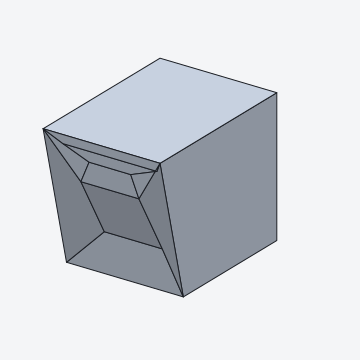

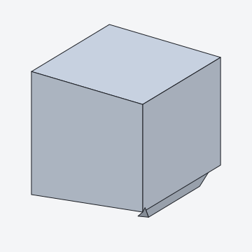


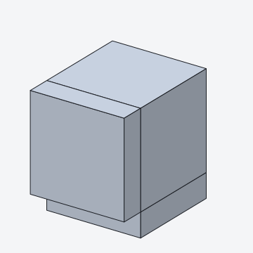
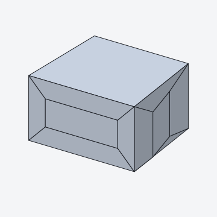
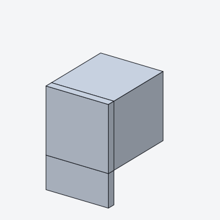

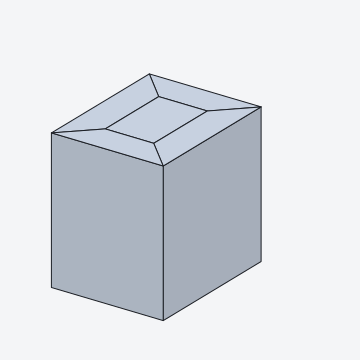

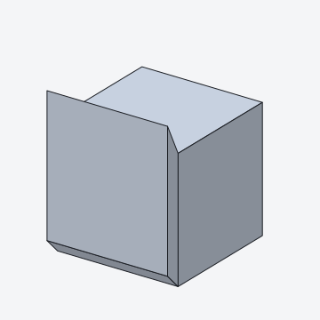

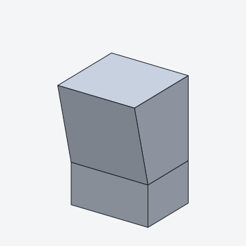
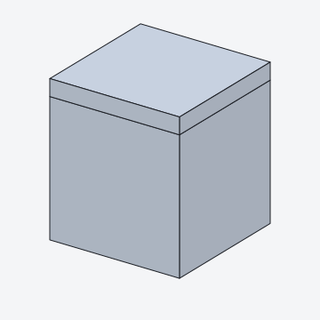
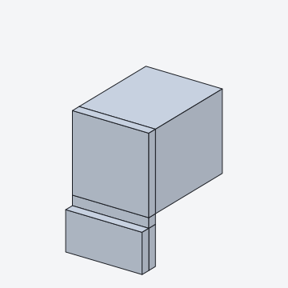
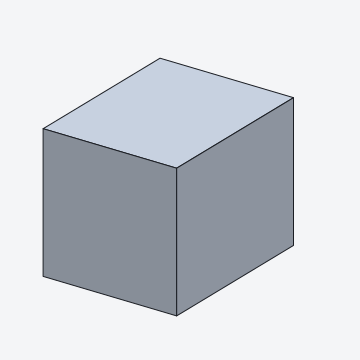
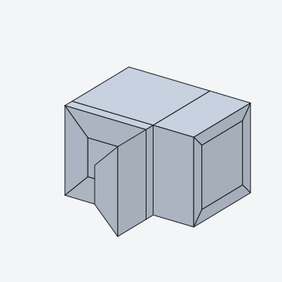
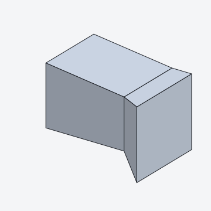


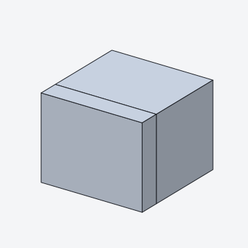

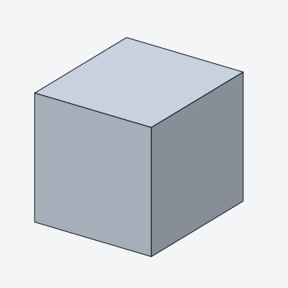
The owner approved this step before it started.
The dataset on this page has been replaced. It held repeats. Entry 0000-5 rebuilt data/round0.npz without them. This page is kept as the record of the first run.
Make the first dataset. It is 10,000 traces of random moves from a cube, stored as a shard. This is the proof milestone from entry 0000-1. It needs no generator.
| File | Change |
|---|---|
data/round0.npz | New. The dataset: 10,000 traces in one shard, 885 KB. |
stats.py | New. It prints what a shard holds. It made the numbers on this page. |
executor.py | It now times each phase of a run and prints the times. |
shard.py | A fix to the reader. See "A problem found" below. |
render.py | It can now draw the final mesh of every trace, for a grid like the one below. |
Each trace has 1 to 5 moves. Each move is picked at random: the type, the face, and the amount. The random seed is 0, which makes the run exactly repeatable.
The machine is an Apple M2 Max with 12 cores. The run used one process.
| Phase | What it does | Time |
|---|---|---|
| Generate | Pick the moves and run them, for 10,000 traces | 2.81 s |
| Save | Write the shard to disk | 0.42 s |
| Load | Read the shard back from disk | 0.62 s |
| Replay | Run every stored move list again and compare with the stored meshes | 1.42 s |
| Whole command | All of the above, plus starting Blender | 6.34 s |
The first attempt at this run did not finish. It was stopped after more than two minutes.
shard.py.These are the final shapes of the first 24 traces. They are not hand-picked.















| Measure | Value |
|---|---|
| Traces | 10,000 |
| Moves in total | 30,254. Each one is one round of the game for training. |
| Meshes stored | 40,254. That is every step of every trace, with the start cubes. |
| Faces in a final shape | 6 to 26, with a mean of 14.1 |
| Vertices in a final shape | 8 to 28, with a mean of 16.1 |
| Kinds of face | Every face has four corners |
| Moves per trace | 1 | 2 | 3 | 4 | 5 |
|---|---|---|---|---|---|
| Traces | 1,958 | 1,968 | 2,030 | 1,950 | 2,094 |
| Different move lists among them | 54 | 1,511 | 2,020 | 1,949 | 2,094 |
| Move type | extrude | inset | slide |
|---|---|---|---|
| Times used | 10,128 | 10,116 | 10,010 |
| Measure | Value |
|---|---|
| Different move lists | 7,628 of 10,000 |
| Different final meshes | 7,518 of 10,000 |
About a quarter of the dataset is repeats. A cube has 6 faces and each face has 9 possible moves, which means only 54 one-move traces exist. The run made 1,958 of them.
All 10,000 traces were read back from the shard, and their moves were run again. Every one rebuilt its stored meshes exactly, down to vertex and face order.
Write the shape check. It scores how close two shapes are by sampling points on both surfaces and measuring the average gap. It is needed before any model can be scored. This does not start until the owner agrees.